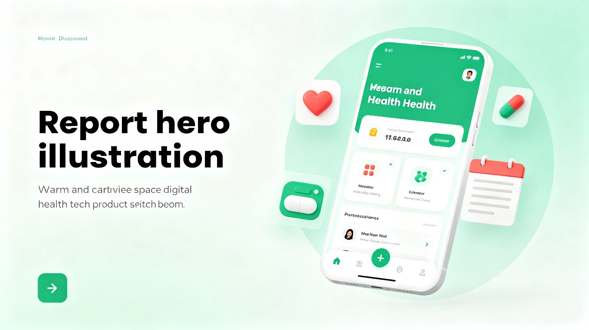

我自己在看病时很容易紧张，身体不舒服时更会遗忘过往病例情况。纸质病历、检查单散落各处，换医院时找不到历史记录，导致重复检查。
每个医院只能查看自己医院看过的患者情况，医生有时也会漏问过敏源，导致不能较好地描述自身情况，甚至遭遇被开禁忌药品的风险。
姨妈期总记不住，容易来之前喝冰，导致痛经。正是这些真实经历，让我想要做一款真正懂用户、保护隐私、全家都能用的健康助手。

安心记录，健康随行。一款面向个人及家庭的本地隐私优先型健康管理助手。
安小录是一款面向个人及家庭的健康管理 PWA 应用，专注于解决看病过程中的信息碎片化、记忆模糊、病例丢失等现实痛点。
产品以"病例收集"为核心，围绕看病前、看病中、看病后三个场景，整合了病例拍照存档、用药提醒、药品安全检测、月经周期追踪、生活用品过期提醒等功能，并支持多成员管理和老年大字模式，真正实现一个账号管理全家健康。
我自己在看病时很容易紧张，身体不舒服时更会遗忘过往病例情况。纸质病历、检查单散落各处，换医院时找不到历史记录，导致重复检查。
每个医院只能查看自己医院看过的患者情况，医生有时也会漏问过敏源，导致不能较好地描述自身情况，甚至遭遇被开禁忌药品的风险。
姨妈期总记不住，容易来之前喝冰，导致痛经。正是这些真实经历，让我想要做一款真正懂用户、保护隐私、全家都能用的健康助手。
18-55 岁的中青年女性及家庭成员，尤其关注自身健康、需要照顾家中老人与孩子、经常就医但病历管理混乱的人群。
纸质病历、检查单散落各处，换医院时找不到历史记录，导致重复检查、多花冤枉钱。
紧张时无法准确描述病史与过敏源，医生漏问导致开出禁忌药物，存在安全隐患。
同时服用多种药物时，不清楚配伍禁忌和饮食忌口，存在严重的安全风险。
姨妈期记不住导致痛经；生活用品过期未察觉；药品服用时间总被忘记。
现有健康 APP 字体小、操作复杂，老年人无法独立使用，数字鸿沟严重。
担心健康数据上传云端后被泄露、滥用或用于商业目的，对云端存储缺乏信任。
首页自动汇总疾病历史、过敏源、正在用药、即将过期物品，看病前一目了然，再也不怕医生问病史。
支持拍照/扫描药单、检查单，本地存储，随时查看。换医院也不怕找不到历史记录。
内置药品配伍禁忌和饮食忌口数据库，自动检测当前用药组合的风险，守护用药安全。
可视化日历记录经期，自动预测下次周期，提前提醒，告别"突然造访"的尴尬与不适。
扫描或拍照记录物品过期日期，到期前 7 天红色预警，不再使用过期的日用品和食品。
一个账号添加全家成员，随时切换查看不同人的健康档案，特别适合管理老人和孩子的健康。
一键切换超大字体、高对比度界面，按钮和输入框全面放大，让老年人也能轻松独立使用。
本地 PIN 码 + SHA-256 加密，数据仅存 IndexedDB，支持导出 JSON 备份，换机不丢数据。
安小录不仅是生活工具，更承载着社会公益使命：
安小录致力于成为每个家庭最值得信赖的健康伙伴。从记录第一张照片开始，让健康管理变得简单、安全、有温度。